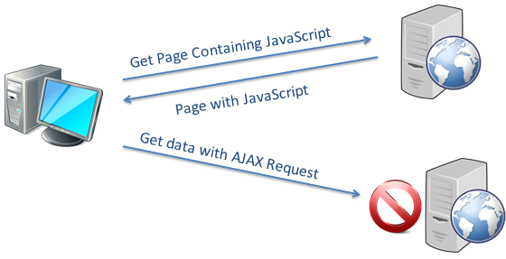

The same-origin policy is a concept in the web application security model.
Under the policy, a web browser permits scripts contained in a first web page to access data in a
second web page, but only if both web pages have the same origin.
An origin is defined as a combination of URI scheme, hostname, and port number.
This policy prevents a malicious script on one page from obtaining access to sensitive data
on another web page through that page's Document Object Model
